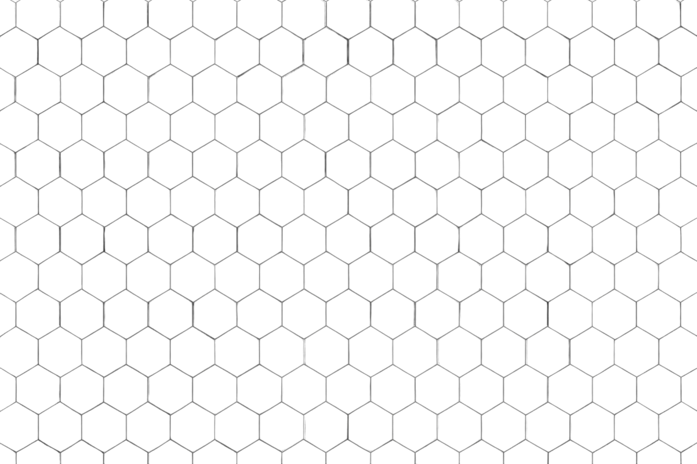
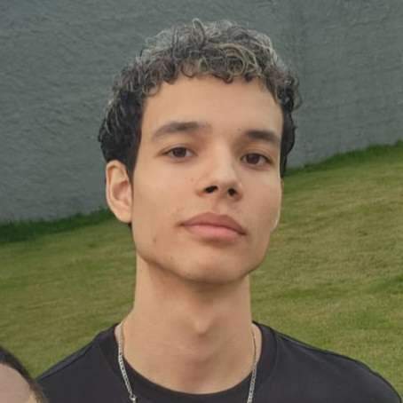
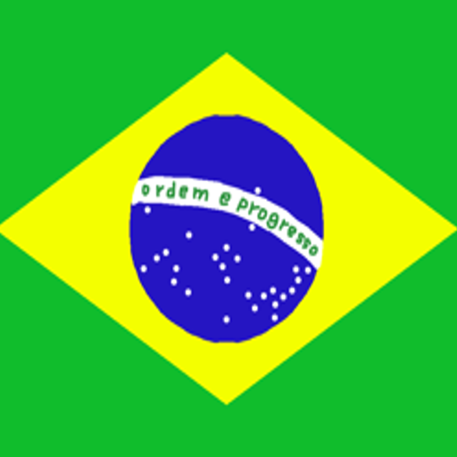
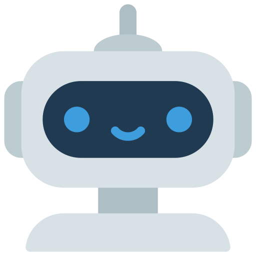

THIAGO TAVARES
Programador & Criador

PT-BR ▼
Sobre o Meu Trabalho
Sou apaixonado por programação e criação, movido por
entusiasmo
e
criatividade.
Gosto de desenvolver e criar projetos
interativos
e
envolventes,
sempre buscando aprender algo novo e explorar diferentes mundos. Cada projeto é uma chance de dar vida às ideias e continuar
evoluindo.


 Projetos
Projetos
Projetos
Projetos
Domínio
C Sharp
Python
6 Anos
3 Anos
Familiaridade com

Jornada com Unity
Comecei a explorar
Unity
aos
11 anos,
tendo meu primeiro contato com o mundo do desenvolvimento de jogos.
Aos
13,
comecei a criar projetos com
C#,
minha primeira linguagem de programação, que serviu como base para o meu crescimento técnico. Hoje, aos
19,
continuo aprofundando meus conhecimentos em
Unity,
movido pela vontade de aprender e sempre evoluir.
[Ver projetos com Unity]
Dando Forma às Ideias
Enquanto desenvolvia projetos em
Unity,
comecei a usar
Blender
para
criar modelos que se encaixassem melhor nas necessidades específicas dos meus jogos.
Com o tempo, expandi isso para outras áreas criativas, como texturas procedurais com
Blender Nodes,
protótipos
e também
VFX.
Hoje, meu foco atual no
Blender
é modelagem 3D, voltada para
referências
e
assets próprios.
[Ver projetos com Blender]

Jornada na Robótica
Minha experiência com
robótica
começou aos
10 anos,
durante uma feira de ciências, onde construí uma usina de
energia eólica funcional. Desde então, venho desenvolvendo projetos de forma independente, aprendendo
C++
para
Arduino,
criando
desenhos técnicos,
desenvolvendo um projeto no
SENAI
e explorando aplicações práticas em sistemas
mecânicos
e
eletrônicos.
Mais do que os próprios protótipos, o que define minha trajetória é a
persistência
em aprender por conta própria, a
criatividade
para transformar ideias em
projetos concretos
e o
comprometimento
em evoluir constantemente. Para mim,
robótica
é mais do que uma área técnica: é a prova de que
curiosidade
e
dedicação
podem se transformar em
conhecimento sólido
e
aplicável.
[Ver projetos de robótica]
 LinkedIn
LinkedIn